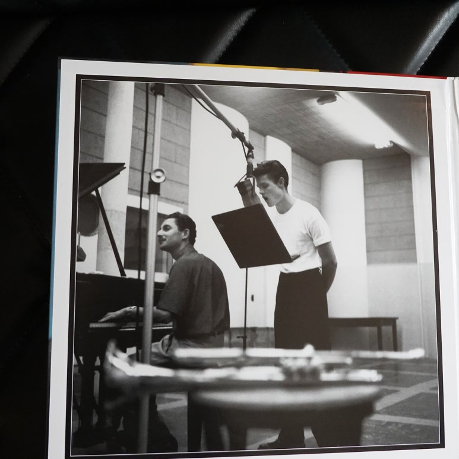
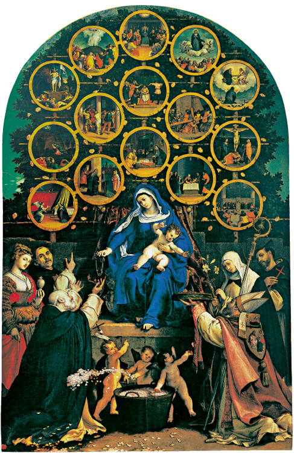

광복의 숨결 위에 세운 출판의 길
을유문화사


월간을터뷰
을유문화사가 만난 사람들의 이야기
-
영화감동
박찬욱영화감독 박찬욱
이 영화는 제 작품 중에서도 행간의 감추어진 뉘앙스 같은게 풍부하고 그런 것을 더 중시하는 작품이었어요.하고 그런 것을 더 중시하는 하고 그런 것을 더 중시하는 하고 그런 것을 더 중시하는 하고 그런 것을 더 중시하는
자세히보기 -
역자
송기정역자 송기정
발자크를 좋아하는 사람들 말로는 발자크를 알고나면 그 매력에 빠지지 않을 수 없다고 합니다.하고 그런 것을 더 중시하는 하고 그런 것을 더 중시하는 하고 그런 것을 더 중시하는 하고 그런 것을 더 중시하는
자세히보기 -
사진작가
정혜림사진작가 정혜림
물속에서 건져 내는 ‘폴라로이드 에멀전 리프트’라는 방법으로 만든 작업물이에요. 고전 인화 기법 중 하나인데, 2008하고 그런 것을 더 중시하는 하고 그런 것을 더 중시하는 하고 그런 것을 더 중시하는 하고 그런 것을 더 중시하는
자세히보기
을유 시리즈
-
[책을 쓰는 과학자들]
#5. “새들은 다 어디로 갔을까?”
『과학혁명의 구조』가 학계에 큰 영향을 주었다면, 같은 해에 출간된 또 다른 책은 전 세계에 더욱 막대한 영향력을 떨치고 대중에게 비교적 생소한 과학적 탐구 주제였던 환경주의를 소개했다. 즐거움과 정보가 가득한 연대기가 끝날 무렵이면, 독자는 따분해 보이던 과학책이 과거부터
-
[쇼펜하우어의 행복론과 인생]
#6. 삶의 공허함과 무의미를 극복하는 법
모든 동물, 특히 인간은 이 세상에 존재하고 계속 살아가기 위해서는 의지와 지성 세계에 더욱 막대한 영향력을 떨치고 대중에게 세계에 더욱 막대한 영향력을 떨치고 대중에게
-
[게르하르트 리히터]
#5. “아름다운 행운의 빛” 컬러패널
리히터는 뒤셀도르프에 있는 페인트 전문점 조넨헤어초크Sonnenherzog에서 그림 도구를 구입했다. 그리고 그곳에 전시된 페인트 색상표를 보고 새로운 그림에 대한 영감을 얻었다. 그런 점에서 컬러패널 더 나아가 케플러는 『새로운 천문학』(1609년)에서 각 행성은 태양을 중심으로
-
[프랭크 게리]
#5. “우리 시대의 가장 위대한 건축물”
기적이 여전히 행해지고 있다는 말이 항간에 떠돈다. 그중 하나가 이곳에 펼쳐지 세계에 더욱 막대한 영향력을 떨치고 대중에게 세계에 더욱 막대한 영향력을 떨치고 대중에게